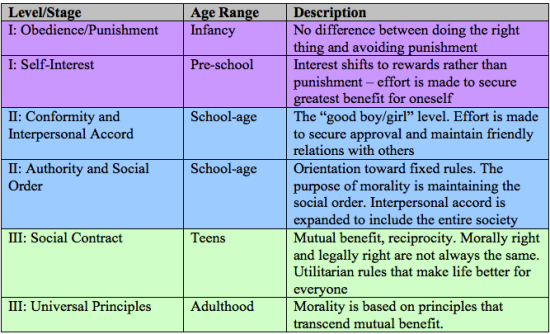

Project Dorian > About
Kohlberg Scale
The Kohlberg Scale is a system created by Swiss psychologist, Jean Piaget, that is used to determine one’s moral reasoning and ethical development. He divided his findings into six categories:
Level 1 (Pre-Conventional)
- Obedience and punishment orientation (wants to avoid punishments)
- Self-interest orientation (bases on self-benefit)
Level 2 (Conventional)
- Interpersonal accord and conformity (bases decisions on social norms)
- Authority and social-order maintaining orientation (bases it on the judicial law)
Level 3 (Post-Conventional)
- Social contract orientation (mutual benefit)
- Universal ethical principles (bases on principles that go beyond just benefits)
Using these stages, you can judge one’s reasoning behind their answer to a controversial morality question and see how it says a lot about their personality and mindset.